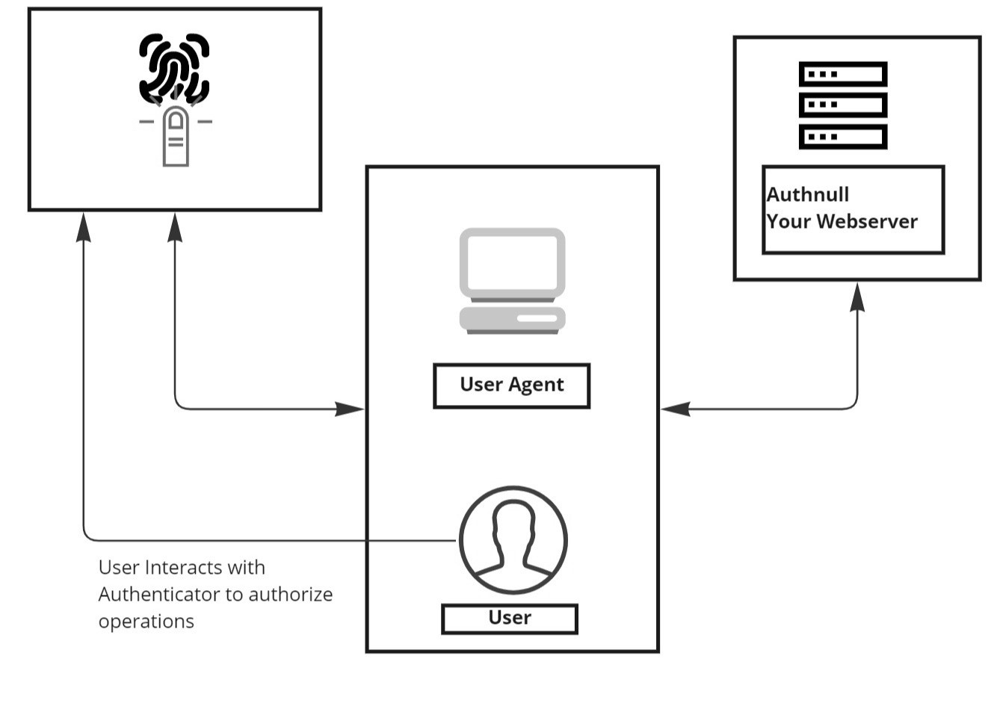

Webauthn Overview
Webauthn is a new standard for authenticating users on the web. It offers numerous benefits over traditional methods such as username/password, two-factor authentication, and biometrics.
Several more robust authentication mechanisms such as certificates and hardware tokens have been supported for specific applications but are still unreliable for the end users.
A website can store and retrieve federated credentials, public keys, and passwords using the Credential Management API. These features enable users to log in without entering their passwords, view the federated account they used to access the website, and continue a session without having to go through the explicit sign-in flow for an expired session.
Strong authentication using asymmetric key cryptography is made possible via the Web Authentication API, an extension of the Credential Management API enabling passwordless authentication and secure second-factor authentication without SMS texts.
Webauthn uses a Public Key stored in the server & a Private key (provided by the end-user) to authenticate the user. It was officially recognized as a W3C web standard in March 2019. Today, WebAuthn is part of the FIDO Alliance’s FIDO2 specifications and the FIDO Alliance runs certification programs to ensure compliance.

Passwordless authentication allows users to log in without the need of remembering a password. Instead of conventional username and password,WebAuthn allows you to use the login methods already set up on your device. So using Web Authentication, you would be able to use the fingerprint sensor on your phone, or Windows Hello on your PC, or you could even use your Apple ID to login into any website. The supported methods include but are not limited to:
- Windows Hello
- Fingerprint Sensors on both Laptops/Mobiles
- Windows PIN
- Yubikey
- Face Authentication
Benefits of WebAuthn
Security
Webauthn is more secure than traditional methods because it uses public key cryptography. This means that the user’s credentials are never sent to the server, so they can’t be intercepted and used by an attacker.
Convenience
Webauthn is also more convenient than traditional methods. For example, with biometrics, the user has to scan their fingerprint or face every time they want to log in. With Webauthn, the user can simply use their device, such as a smartphone, to log in.
Support for multiple devices over multiple resources(apps).
Enhanced customer engagement
Customers - Frictionless login experience
Since WebAuthn uses device-based authentication, the need for passwords is removed completely. For the customer, this means not having to remember your username and password when logging in, or requesting a one-time password for a step up second factor. The authentication flow is simplified for the end user to just using their registered device for authentication
Product owners - Time to Authentication, Time to market
As mentioned before, WebAuthn removes the need for passwords. Product owners care about the use of their application, and removing any barriers to customers is usually their #1 goal. WebAuthn contributes to a frictionless login experience for these users. In addition, since WebAuthn removes the need to think about any complex password settings, product owners can accelerate their time to market by avoiding the need to build complex architectures to manage and store passwords.
Strengthened Security Posture
Customers - Preservation of trust
Costumer trust is one of the core aspects in a business, With WebAuthn, you are getting a much more secure authentication method that subverts the risks associated with passwords.
Security teams - Eliminate the inherent weakness of passwords
WebAuthn does not rely on knowledge-based authentication such as usernames and passwords. This means that you are relying on registered devices that belong to the end user. The risk of spoofing authentication is lower because registered physical devices are harder to steal than passwords, making your security team happier.
Reduced Organizational Load to Support Applications
Support organization - Reduce support cycles for multiple factors
A unique functionality of WebAuthn is using this standard as the primary method of logging in. By implementing WebAuthn, support cycles are eased, since the number of factors to enroll for will essentially reduce to just WebAuthn.